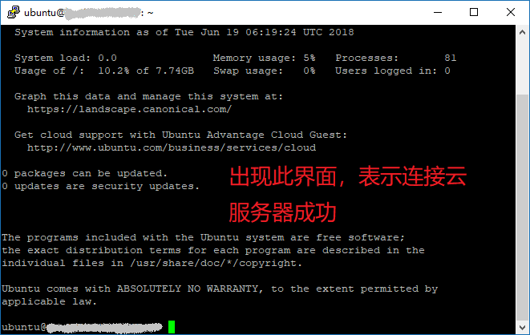
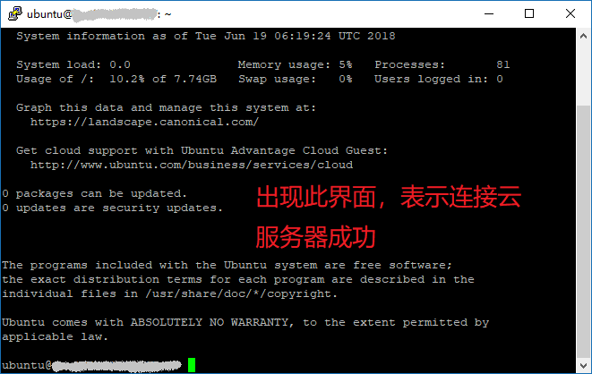
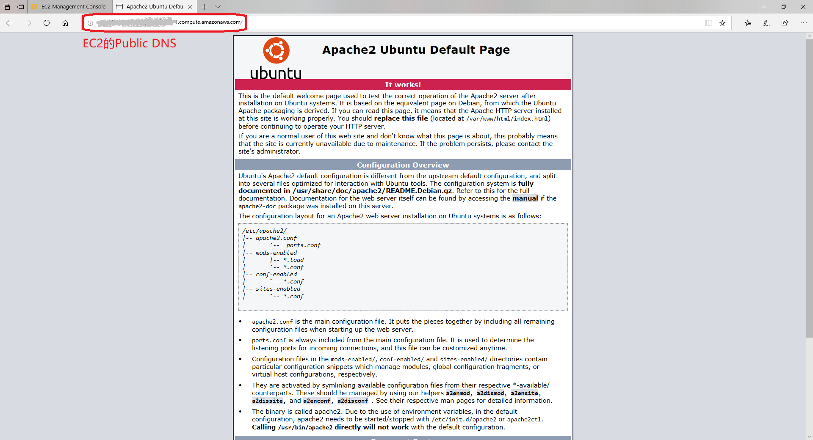

从零开始利用AWS来快速搭建WordPress平台---云服务器环境配置篇(1)
《从零开始利用AWS来快速搭建WordPress平台—云服务器搭建篇》上一篇主要介绍了如何在AWS上搭建一个云服务器，也就是创建一个EC2实例。接下来进一步介绍云服务器相关环境配置，如Apache, PHP, XCache, FTP的安装。 第一部分 Window系统下PuTTY工具连接云服务器
首先我们需要用PuTTY工具来连接云服务器，这样才输入Linux相关的命令进行环境配置。《从零开始利用AWS来快速搭建WordPress平台—准备篇》文中“常用工具”这一小节对PuTTY工具的下载进行了相关说明，请自行参阅。
注意：这里还需要《从零开始利用AWS来快速搭建WordPress平台—云服务器搭建篇》文中第七步中密钥对文件（后缀名*.pem），所以请事先准备好。
接下来将分步进行详细说明。
第一步，安装好PuTTY工具后，首先单击“PuTTYgen” ，打开PuTTY Key Generator，如下两幅图所示:
第二步，选择默认的类型RSA，然后单击“Load”找到事先准备好的密钥对文件”.pem”，然后选择，确定，如下图所示
第三步，这时，点击下图的“Save private key”按钮，将密钥对文件（.pem）转换成一个”.ppk”的文件（命名并保存在你自己想放的地方）。
第四步，单击“PuTTY”打开PuTTY Configuration, 接着在puTTY中的“Host Name(or IP Address)”中填写你在AWS中创建的云服务器的Public DNS或者Public IP(详细见《从零开始利用AWS来快速搭建WordPress平台—云服务器搭建篇》这一篇中第七步“审核”中的IP和DNS说明)，这里以填入Public IP为例来登入。然后展开puTTY左侧框中的SSH选项卡，找到Auth选项，然后点击Browse，选择刚才保存的那个”.ppk”文件。然后点击Open，如下图所示。
 第五步，此时或跳出命令行登录窗口，需要你输入EC2服务器上的默认账户，无需输入密码。最后在login as: 后面输入” ubuntu”，就会出现如下图所示的界面：

注意，默认账户根据申请EC2时选择的AMI(亚马逊机器镜像）的不同而不同
默认账户说明如下：
第五步，此时或跳出命令行登录窗口，需要你输入EC2服务器上的默认账户，无需输入密码。最后在login as: 后面输入” ubuntu”，就会出现如下图所示的界面：

注意，默认账户根据申请EC2时选择的AMI(亚马逊机器镜像）的不同而不同
默认账户说明如下：
每个 Linux 实例类型均使用默认 Linux 系统用户账户启动： 对于 Amazon Linux，用户名称是 ec2-user； 对于 RHEL5，用户名称是 root 或 ec2-user； 对于 Ubuntu，用户名称是 ubuntu； 对于 Fedora，用户名称是 fedora或 ec2-user； 对于 SUSE Linux，用户名称是 root 或 ec2-user； 另外，如果 ec2-user 和 root 无法使用，需要与 AMI 供应商核实。
第二部分 利用PuTTY工具在云服务器安装Apache, PHP, XCache, FTP等 接下来在命令行界面输入
sudo su
进入root账户，如下图所示 然后再输入指令
apt-get update
来更新源信息。 2. 安装Apache到云服务器 如下图所示，为了安装 Apache，输入指令
apt-get install apache2
3. 安装完成后，在浏览器中输入EC2云服务器的Public DNS地址就会出现Apache的默认页面了，如下图所示  4. 接下来进行 PHP安装，这里输入 指令，如下图所示
apt-get install php5
5. 为了让PHP支 MySQL。依次输入以下指令即可：
apt-get install libapache2-mod-auth-mysql
apt-get install php5-mysql
apt-get install php5-gd
之后重启Apache。输入下列指令：
service apache2 restart
为了测试PHP，这里建立一个探针文件。输入下列指令，如下图所示
vi /var/www/html/info.php
然后输入，
<?php
phpinfo();
?>
输入完成后按ESC键退出编辑模式，切换成大写模式，双击两次Z键即可保存退出。之后就可在浏览器输入Public IP/info.php的地址格式，即可查看，如下图所示。 8. 之后安装 XCache 优化缓存。输入下列指令
apt-get install php5-xcache
如下图所示，然后重启Apache 9. 下面开始配置FTP。 a. 安装vsftp后， vsftp默认会创建一个名为ftp的用户，用户目录在/srv/ftp，好像匿名用户也会使用这个设置。 全新安装指令
apt-get install vsftpd
小提示TIPs 重新安装指令
apt-get –reinstall install vsftpd
卸载并清除配置文件指令
apt-get -purge remove vsftpd
卸载并清除配置文件指令 b. 启动、停止vsftp 如下图所示，为了启动vsftp，输入指令
service vsftpd start
c. 创建ftp用户组和目录 i. 创建FTP用户组ftp-user, 输入指令
groupadd ftp-users
ii. 修改权限, 输入指令
chmod 777 /var/www
iii. 指定文件夹归属用户和用户组, 输入指令
ftp-users /var/www
如果只是自己使用也可以输入
ftp-users /
iv. 输入指令添加用户名yourname（自定义）
useradd -g ftp-users -d / yourname
输入以下指令后，会显示输入密码的提示（Enter new UNIX password）
passwd yourname
Enter new UNIX password:（输入密码，屏幕上不显示输入字符过程） Retype new UNIX password:（重复一次密码，屏幕上不显示输入字符过程） passwd: password updated successfully
v. 最后输入指令重启服务
service vsftpd restart
注意：如果在FTP软件中连接服务器会提示530Login incorrect，这是因为ubuntu启用了PAM，所在用到vsftp时需要用到 /etc/pam.d/vsftpd 这个文件（默认源码安装的不会有这个文件），因此除了匿名用户外本地用户无法登录。所以只要删除了就可以了。输入以下指令即可
rm /etc/pam.d/vsftpd
vi. 此时输入以下指令，即可登陆到FTP服务器了，注意指令中的IP地址要换成你自己云 服务器的public IP。
ftp 192.168.1.1
有价值的参考出处 windows系统上利用putty通过SSH连接亚马逊AWS服务器 - CSDN博客 AWS免费云主机之如何使用putty登录 利用 AWS EC2+RDS 搭建WordPress （三）EC2环境配置以及FTP配置
您也可以请我喝一杯咖啡,支持我的创作~ 比特币（BTC）:1FLHDgSp76u3CoasTF7fDyYBooGv8Frh5f 比特币现金（BCH）:1FLHDgSp76u3CoasTF7fDyYBooGv8Frh5f Ethereum (ETH): 0x5061c5ddeb4f82e3070a4bd593d2b1cc90d1bfc4